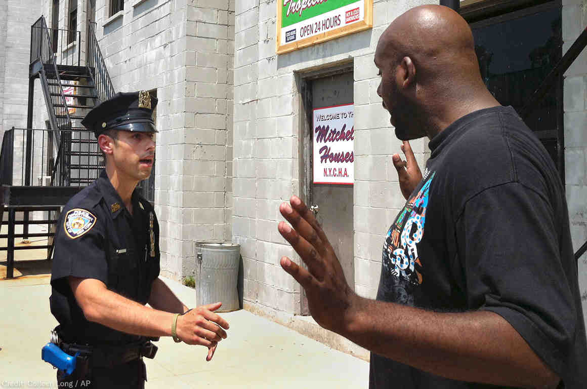

Where It All Began...
Living in NYC, especially during the summer of 2020, it was easy to see how police
brutality and violence
works against communities of color. With the suspension of Stop and Frisk, a system allowing police officers
to stop random people. During the stops, people were interrogated and searched. Police officers were able to
stop citizens based off of "reasonable suspicion". It was ultimately found that Stop and Frisk violated the
4th amendement's prohibition of unreasonable search and seizure.
NYC Complaint Data
I found a datatbase of complaint data from NYC from the last decade. There was a whopping
7 million+ rows of
data to sort through...
Racial Disparities
The (known) race that has the highest number of complaints
is the Black race! I'm not necessarily surprised, but it is interesting how many are
"unknown". I guess we'll never know their race...
Sex Disparities
It is also not completely surprising that men take the trophy for
most complaints against them! However, the people who reported most likely assumed the
person's gender based upon appearance, some of the data may be skewed.
What Crimes Are Reported the Most?
Petit Larceny! A.K.A stealing something worth less than $950...
There was a crisis going on in the Bronx where people had their phones snatched on the train,
perhaps that contributes to this. Stealing purses off of the train is also common in NYC.
Population Density
Although we can observe here that Brooklyn has the highest number of
complaints...
Population Density
The Bronx's crime per 100,000 people is a lot higher! Again, this can be
attributed to the crime crisis in the Bronx. Stealing phones, purses, airpods, etc. On
an app called Citizen, where you're able to track crime, there are multiple times a day
where I'll get a notification for a major crime happening in the Bronx.
What Exactly Can We Do With This Data?
From my analysis, I concluded that men who are Black are more likely to be reported for a complaint.

Source!
My data was sourced from NYC Open Database at
https://data.cityofnewyork.us/Public-Safety/NYPD-Complaint-Data-Historic/qgea-i56i